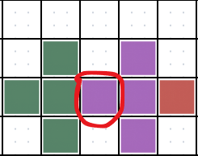
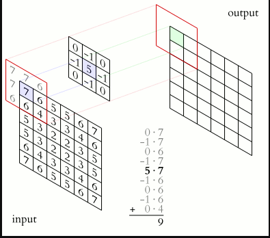
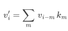
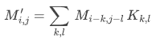

Ahmad Hamze
February 24, 2026
Image manipulation with convolution using Julia
In the past month, I started learning the Julia programming language, it was created by mathematicians for mathematicians. It is mostly used for scientific research and teaching purposes. I was always drawn to it, but for some reason I kept procrastinating learning it until recently.
In this blog, I will share what I learned from the amazing Introduction to Computational Thinking course taught by Professor Alan Edelman, one of the cofounders of the Julia language, and others.
You can find the code used in this blog here.
Heads Up! If you intend on taking the course, do not continue reading this blog, as it spoils some problem sets.
Image manipulation with Julia
When learning a new programming language, one usually starts with the basic syntax, data structures, and loops. The way I will do it here is by jumping directly to hands-on problems like image manipulation. When you learn how to manipulate arrays in a programming language, a typical exercise is to manipulate images, which are fundamentally arrays of pixels, for example, you would write code to detect the edges inside an image.
In this blog, I will show a simple edge detection algorithm and another, more sophisticated one that uses the mathematical concept of convolution.
Simple edge detection of an image
I will be using a Julia library called Pluto.jl, which creates a notebook where you can run Julia code interactively.
Pluto notebooks are similar to Jupyter notebooks, but they are more interactive, manage their own packages, and are written completely with Julia.
If you haven’t seen this problem before, the main idea is to check the surroundings of every pixel and see if the pixels around this pixel are quite different than each other. If that is the case, this means that the pixel is an “edge pixel”, i.e., a pixel where a noticeable change occurred.
Note that a pixel is nothing but a combination of the three colors red, green, and blue. In Julia, we can create a pixel like this
RGB(red_value, green_value, blue_value)where the values are floating numbers between 0 and 1.

The image above demonstrates what an edge pixel might look like. The circled pixel has green pixels on the left and purple pixels on the right; this is a considerable difference to consider the pixel itself an edge pixel. Note that the color of the targeted pixel itself is not important.
Since the objective is to show the edges only, we can change the color of the edge pixels to white and change all other pixels to black. This will leave us with an image showing the edges only.
Edge cases
Once you start thinking about the code that implements the logic above, the first obstacle you will face is what to do with pixels at the edge of the image.
The code needs to always access pixels on the sides, so what do we do when there are no sides? There are many ways to address this issue. In this, blog we will see two different ways. First, I will keep things easy and ignore the edge completely. So, instead of looping through all the pixels of the image, I will only loop through the interior pixels, leaving the ones on the four edges.
The code will also check the left, right, top, and bottom pixels of each interior pixel. Again, this is to keep things as simple as possible, but you can use a larger neighborhood to get better results.
Simple edge detection code
Before diving into the code, it will be useful to see a quick intro to Julia matrices.
Julia matrix notes
We can create a matrix like this
m = [
1 2 3;
4 5 6;
7 8 9
]
- To access the first element of the matrix (that is, the number 1):
m[1,1](In Julia, arrays are indexed starting by 1, not 0) - You can access a portion of the matrix, e.g.
m[2:end, 2:end]gives the matrix[5 6; 8 9] - You can access a property of an object (a structure to be more precise) like this
obj.property - Functions always return in Julia; the
returnkeyword can be used, but it is optional - Julia offers something called the “broadcasting operator”, which can be used with normal operators (e.g. +, -, *, >, <) to broadcast the operator on an iterable, e.g.
(1, 2, 3) .> 2yields(false, false, true)
Code
We will have a function that takes an image and iterates through the inner parts of the image while identifying each pixel as an edge pixel or not.
First, here is the function that checks every pixel
function check_pixel_neighboor(neighboor::AbstractMatrix)
# checks the pixels on top and bottom, if the difference is big, then make it black
# do the same when comparing right and left
threshold = 0.2
vertical_change = abs(neighboor[1, 2] - neighboor[3, 2])
horizontal_change = abs(neighboor[2, 1] - neighboor[2, 3])
# The broadcasting operator compares each element of the tuple with 'threshold'
# if one is true than the condition is valid
if any((vertical_change.r, vertical_change.g, vertical_change.b) .> threshold)
return RGB(1.0, 1.0, 1.0)
elseif any((horizontal_change.r, horizontal_change.g, horizontal_change.b) .> threshold)
return RGB(1.0, 1.0, 1.0)
else
return RGB(0.0, 0.0, 0.0)
end
end
Quite simple, it is only checking the vertical and horizontal changes, if the change in one of the directions is large enough, i.e., exceeds the threshold, return a white pixel, otherwise return a black pixel. Notice that the function takes the neighbor only and not the specific pixel because we don’t need it.
Now, for the function that runs the checking on all the interior pixels
function simple_edge_detection(image::AbstractMatrix)
s = size(image) # gives a tuple describing the size e.g. (200, 300)
[
check_pixel_neighboor(image[i-1:i+1, j-1:j+1]) # sends 9 pixels in total, we only check 4
for
i in 2:s[1] - 1, j in 2:s[2] - 1 # start from the second row/column and stop befor the last row/column
] # result_image is returned even though 'return' is not specified
end
If you have done this before, the first thing you probably noticed is how easy and small the syntax is. I remember doing the same thing with C, and it was much longer and harder to write.
You can also see that the code is using a list comprehension just like in Python; the only difference is that Julia makes it
easier to create matrices, which is what the , is doing in the list comprehension.
To see this better, you can create a table of multiplication like this
[i * j for i in 1:10, j in 1:10]
Result
I will apply the code on this not-so-clean cat
This is not my cat, I found it on the streets, calm down!
And this is the result
The simple edge detection function seems to work. What stands out the most to me is the cat’s mustache, nose, and eye countour. These regions have strong colors that are different than the neighboring regions, which is why their edges show clearly. Because the cat has colorful fur, it is being detected as edgy in many regions. Also, the rock behind the cat got its fair share of edginess as well.
Convolution
In the context of image processing, convolution is the process of adding each element of the image to its local neighbors, weighted by a kernel. You can see a cool animation of the concept on this Wikipedia page.
With convolution, you can apply many linear transformations to an image by just using different kernels.
If you didn’t check the animation above, here is an image showing a part of it

The input represents the image, and the kernel is the matrix to be used on the image. The center of the kernel (5 in this example) will be centered on the targeted pixel, and the rest of the kernel’s element will be multiplied by the neighboring pixels.
Edge cases
This opens up the boundary conditions question again: how to deal with the pixels at the edge? What are we supposed to multiply the kernel’s elements with if there are no pixels? The approach I took in simple edge detection can work here, but to be fair, it is kind of running away from the question.
This time, I will use the same method shown in the animation, that is, using the closest available value.
Back to the example, the input cell containing 7 is where the kernel is centered (7 will be multiplied by 5). There is nothing to the left of 7, so we use the number closest to this location (i.e., 7); therefore, we multiply 7 by -1 (the element to the left of 5 in the kernel).
Convolution 1D
It is best to start with the simple case of one-dimensional arrays; not only does it help with seeing the method clearly, but it also helps with writing the code. Because Julia offers multiple dispatch, we can reuse some of the 1D functions in the 2D case.
Code
We want to convolve a vector with a 1-D kernel (i.e., another vector), and we want to handle the edge case by extending the vector from both sides with the closest value, i.e., the first value if the extension is at the beginning and the last value if the extension is at the end.
We start with the extend function which simply extends the vector
# The argument i is playing the role of the index, if the index is within range
# the corresponding value is returned, otherwise, the closest value is returned
function extend(v::AbstractVector, i)
n = size(v)[1]
if 1 <= i <= n
return v[i]
elseif i > n
return v[end]
else
return v[1]
end
end
Now that we have a function that takes care of the edge cases, we can use it in the 1D convolve function.
The process is similar to the sliding window technique; the center of the kernel is always centered at the targeted element, and then the window slides from the beginning to the end.
The window is a region with length 2*l + 1 going from -l to l and passing by 0, which is the center of the kernel.
function convolve(v::AbstractVector, k::AbstractVector)
size_k = size(k)[1]
# Computing l such that the center of the kernel would be the center of the window of length 2*l + 1
l = (size_k - 1) ÷ 2 # integer division
# Adjusting l in case size_k is even, this is to ensure having the correct window size
l_adjusted = size_k % 2 == 0 ? l + 1 : l
return [
sum(
# grabbing the values of the window then using broadcast mulitplication to multiply
# each element with the kernel k. (k is inverted to follow the correct mathematical convention of convolution)
[extend(v, idx) for idx in i - l: i + l_adjusted] .* k[end: -1 :1]
) # summing the result of each window
for i in 1:size(v)[1] # going from the beginning of the vector till the end
]
end
Notice the ÷ symbol! You can use mathematical notation in Julia by writing LaTeX, e.g. \div gives ÷
You’re probably wondering why the kernel is inverted in the code. This is the proper way to do things given the mathematical notation of convolution. This is beyond the scope of this blog, but this is the formula for the one-dimensional case

min the above formula runs between-landl, where2*l + 1is the length ofk.
We can verify that the code is consistent with the formula using a quick test
begin
v = [1, 10, 100, 1000, 10000]
k = [1, 1, 0]
convolve(v, k)
end
# Answer should be [11, 110, 1100, 11000, 20000]
Convolution 2D
We just need to extend the thinking into the two-dimensional case. The first step is to write a new extend function that takes care of the edge cases, as we saw in the animated example from Wikipedia.
In the 2D case, we have to check the horizontal border and the vertical border.
function extend(M::AbstractMatrix, i, j)
num_rows, num_cols = size(M)
# i is outside (too little or too big)
if 1 > i || i > num_rows
# j is inside the valid range
if 1 <= j <= num_cols
# call the 1d extend on the j-th column of M and i
return extend(M[:, j], i)
# j is too little
elseif 1 > j
# call the 1d extend on the 1st column of M and i
return extend(M[:, 1], i)
# j is too big (the remaining case)
else
# call the 1d extend on the last column of M and i
return extend(M[:, end], i)
end
# j is outside (too little or too big)
elseif 1 > j || j > num_cols
# i is inside the valid range
if 1 <= i <= num_rows
# call the 1d extend on the i-th row of M and j
return extend(M[i, :], j)
# i is too little
elseif 1 > i
# call the 1d extend on the 1st row of M and j
return extend(M[1, :], j)
# i is too big (the remaining case)
else
# call the 1d extend on the last row of M and j
return extend(M[end, :], j)
end
# The case where everything is good
else
# return the value at (i,j)
return M[i, j]
end
end
Take a close look at the comments of the function to understand what is going on. All that the function is doing is identifying the edge cases and then letting the one-dimensional extend function take care of the rest.
Now, the two-dimentional convolve function, here we want to center the kernel on the targeted value and slide it over two windows.
A horizontal one going from -l_rows to l_rows, and a vertical one going from -l_cols to l_cols.
function convolve(M::AbstractMatrix, K::AbstractMatrix)
m_rows, m_cols = size(M)
ker_rows, ker_cols = size(K)
# l_rows is such that the horizontal center of the kernel would be the horizontal center of the matrix of length 2*l_rows + 1
l_rows = (ker_rows - 1) ÷ 2
# l_cols is such that the vertical center of the kernel would be the vertical center of the matrix of length 2*l_cols + 1
l_cols = (ker_cols - 1) ÷ 2
# Adjusting like the 1D case to ensure having the correct window sizes
l_rows_adj = ker_rows % 2 == 0 ? l_rows + 1 : l_rows
l_cols_adj = ker_cols % 2 == 0 ? l_cols + 1 : l_cols
return [
sum(
# The logic is similar to the 1D case, but two dimensional
[
extend(M, i, j) for i in r - l_rows:r + l_rows_adj, j in c - l_cols:c + l_cols_adj
]
.*
K[:, end: -1 :1] # inverting k to follow the correct mathematical convention
)
for r in 1:m_rows, c in 1:m_cols # creating a new matrix convolution matrix from the initial matrix and kernel
]
end
The function is really just an extension of the one-dimensional case for the two-dimensional one.
The kernel matrix is also modified; the columns are inverted to follow the mathematical convention of convolution. Here is the two-dimensional formula if you’re interested

That’s it! We can now use the new convolve function to apply filters to images.
Let’s try the edge detection kernel on the same cat image. You can check here to see some interesting kernels.
Result
begin
K_edge = [0 -1 0; -1 4 -1; 0 -1 0]
convolve(cat, K_edge)
end
This is what we expected, the quick simple_edge_detection function seems to have done a good job.
The convolution function is smoother and doesn’t show the edges as strongly as the one we created. This is normal, and you can probably make adjustments to simple_edge_detection to try to make them as close as possible.
Other kernels
Now that we have a convolution function, we can try as many filters as we want.
The sharpen filter
begin
K_sharpen = [0 -1 0; -1 5 -1; 0 -1 0]
convolve(cat, K_sharpen)
end
The Gaussian blur
begin
K_gaussian_blur = 1 / 16 .* [1 2 1; 2 4 2; 1 2 1]
convolve(cat, K_gaussian_blur)
end
We can even try a random filter; here is one that is not symmetrical unlike the previous filters
begin
K_random = [1 -1 2; 3 4 -1; 0 -2 -3]
convolve(cat, K_random)
end
I noticed that the center of the kernel controls the brightness of the image; the higher the value, the brighter the image will be.
Final thoughts
Image filtering is an application of linear algebra; any linear transformation can be written in matrix form and used as a filter on an image.
Of course, we can do non-linear transformations on images, and the course covers some of that if you’re interested.
What I enjoyed most in this course is how good the Julia language is; it seemed to me like it combines what’s good from other languages like Python, JavaScript, and even Matlab. The performance is similar to C as well, which is phenomenal. I encourage you to learn and use this language if you’re into scientific programming.